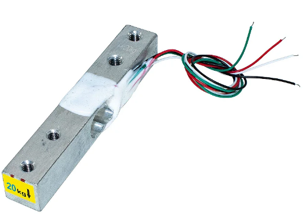

Sistema de monitoreo de variables locales y control de actuadores en la colmena.
El sensor DHT11 permite medir la temperatura y humedad, es digital, protege frente al ruido en comunicación,tiene una alta fiabilidad y estabilidad debido a su señal digital calibrada.
MODELO DHT11
-Alimentaciónde 3,5 V a 5 V
-Consumo 2,5 mA
-Señal de salida Digital
-Para Temperatura
-Rangode 0ºC a 50ºC
-Precisión a 25ºC ± 2ºC
-Resolución 1ºC (8-bit)
-Humedad
-Rango de 20% RH a 90% RH
-Precisión entre 0ºC y 50ºC ± 5% RH
-Resolución 1% RH
Terminales de Conexión de ESP32-CAM a DHT11
|
ESP32-CAM |
DHT11 |
|
GPIO 2 |
DATA |
|
5V |
Vcc |
|
GND |
GND |
Terminales de Conexión de ESP32-CAM a HX711
|
ESP32-CAM |
HX711 |
|
Vcc = 5V |
Vcc |
|
GND |
GND |
|
GPIO 12 |
SCK |
|
GPIO 13 |
DT |
Terminales de Conexión de ESP32-CAM a MOC3043
|
ESP32-CAM |
MOC3043 |
|
GPIO 15 |
PIN 1 |
|
GND |
PIN 2 |
Una celda de carga es un transductor capaz de convertir una fuerza en una señal eléctrica, esto la hace a través uno o más galgas internas que posee.
Este módulo es una interface entre las celdas de carga y el microcontrolador, permitiendo poder leer el peso de manera sencilla. Internamente se encarga de la lectura del puente wheatstone formado por la celda de carga, convirtiendo la lectura analógica a digital con su conversor A/D interno de 24 bits.
Para instalar la celda de carga hay que hacerlo con separadores, los cuales deben de distanciar a la base y recipiente de la celda para que la parte central quede libre; además hay que tener en cuenta que el sentido de la flecha indica la dirección de la fuerza o peso a aplicar.
Permite hacer streaming de vídeo e imágenes y servirlas a la red creando un servidor local en el mismo chip.
Este sensor de control de calidad de aire es usado para la detección de contaminación en el medio ambiente,
Este sensor se encarga de la detección de concentración de gas en diversos porcentajes.
ESP-WROOM-32 es un potente módulo que integra WiFi y Bluetooth, ideal para desarrollar productos de IoT.
En el núcleo de este módulo está el SoC ESP32-D0WDQ6. El chip integrado está diseñado para ser escalable y adaptado.
El módulo ESP-WROOM-32 trabaja a 3.3V en alimentación y GPIO
created with
Website Builder Software .